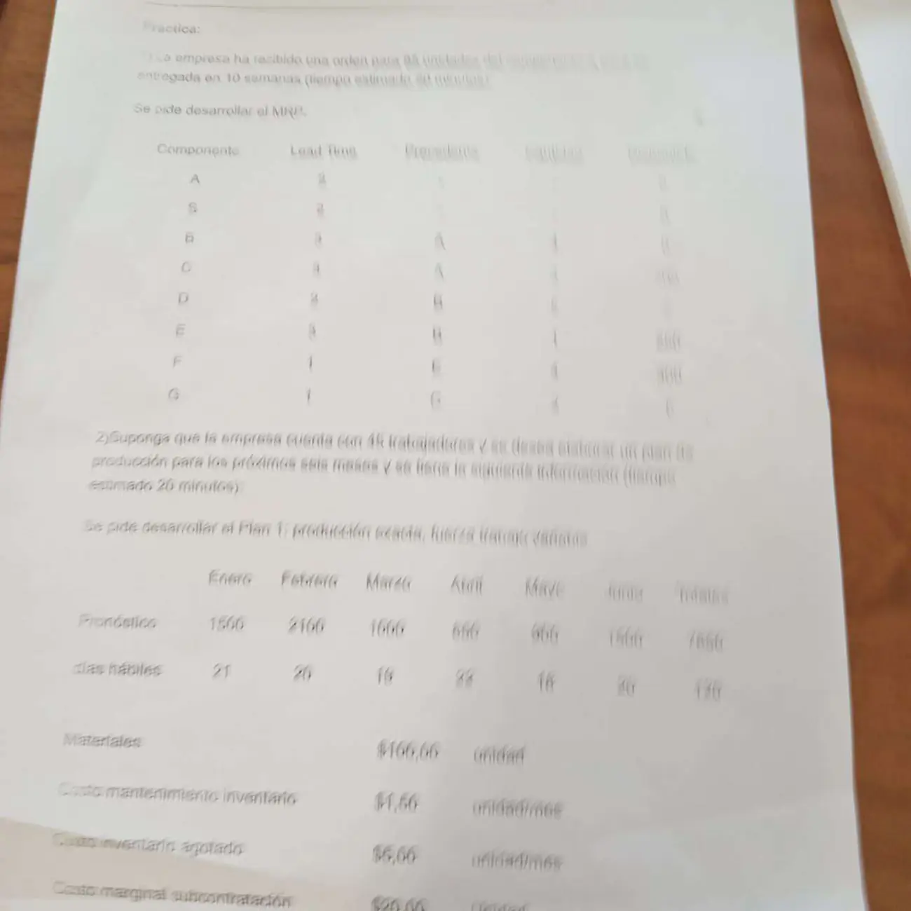

2° parcial 09/11/2023, práctica y teoría
2° parcial, 09/11/2023
Enunciado



Propuesta de respuesta
Respuesta no verificada. La propuso Luta Studios con inteligencia artificial y ningún docente la revisó. Puede tener errores.
1. MRP. Sin propuesta. La primera hoja está demasiado borrosa. No se leen el producto de la orden, la cantidad de cada componente, las existencias ni los lotes. Con esos datos se resuelve igual que el MRP del 23/10/2026.
2. Plan 1. Sin propuesta. El método de cálculo de los planes agregados no está en el Drive, y parte de los datos se lee mal.
3. Árbol de decisión. Se resuelve del final hacia el inicio, con valor esperado, y se poda lo que no conviene (Chase, págs. 130 a 132). No comercializar vale 0, porque no cambia los beneficios.
| Nodo | Cuenta | Valor |
|---|---|---|
| Prueba favorable, comercializar | 720 000 | |
| Prueba desfavorable, comercializar | −120 000 | |
| Prueba desfavorable, decisión | No comercializar, 0 es más que −120 000 | 0 |
| Hacer la prueba | 367 000 | |
| Sin prueba, comercializar | 300 000 |
Conviene hacer la prueba, porque 367 000 supera a 300 000. Si sale favorable, se comercializa. Si sale desfavorable, no. La prueba agrega de valor esperado y cuesta 65 000.
Teoría 1. Análisis de decisiones. Lo único con apunte son los árboles (Chase, págs. 130 a 132). Se dibujan con cuadros para las decisiones y círculos para los hechos fortuitos, con la probabilidad en cada rama y el resultado al final. Se resuelven del final hacia el inicio, calculando el valor esperado en cada círculo, eligiendo el mayor en cada cuadro y podando las demás ramas. Chase además descuenta los valores a una tasa, en su ejemplo al 16%. Las etapas del análisis, las tablas y los indicadores no están en el Drive, y esa parte no tiene propuesta.
Teoría 2. APO, MPS y MRP. Lo que dice el material de cada uno.
| Plan | Qué es | Fuente |
|---|---|---|
| APO | Plan Agregado de Operaciones. Las prácticas lo calculan por período, con la demanda, los costos y la fuerza de trabajo | Consignas del 09/11/2023 y del 23/10/2026 |
| MPS | Plan con fases de tiempo que dice cuánto y cuándo crear cada pieza final | Chase, pág. 612 |
| MRP | Calcula piezas, componentes y materiales necesarios, y cuándo pedirlos o producirlos | Chase, pág. 612 |
| CRP | Calcula la capacidad que requiere el plan y la compara con la disponible | Preguntas frecuentes vFinal |
Las relaciones que están escritas son tres.
- El MPS alimenta al MRP. Los brutos de un producto final salen del MPS, y los de cada componente, de las órdenes planificadas de sus padres (2° Parcial, preguntas frecuentes, #2).
- El MRP necesita además la lista de materiales y el inventario (Chase, pág. 612).
- El CRP toma lo que pide el plan y lo compara con la capacidad disponible. Si no alcanza, hay alternativas como contratar fabricación, adelantar, turnos adicionales o más horas (Preguntas frecuentes vFinal, #31). El MRP de ciclo cerrado se actualiza con los datos reales de producción (Chase, pág. 612).
Cómo pasa el APO al MPS no está escrito en ningún apunte del Drive. Esa parte no tiene propuesta. Llevala de la clase.
Teoría 3 y 4. Inteligencia de negocios, Drill down, Roll up, jerarquías y medida calculada. Sin propuesta. No hay apunte de inteligencia de negocios ni de OLAP en el Drive.
Respuesta no verificada. Puede tener errores.
Se armó con 2° parcial, secciones Árboles de decisión, APO, MPS y MRP, Cómo funciona un MRP y Si la capacidad no alcanza.
Quedó en duda: El enunciado da 50% de éxito sin prueba, pero con las probabilidades de la prueba el éxito queda en . Las cifras no son coherentes entre sí y se usaron tal cual. Los 65 000 se restan al final de la rama de la prueba, y restarlos en cada resultado da lo mismo. La frase «No hacer la campaña de marketing no afectaría los beneficios» se leyó como que no comercializar vale 0. En la teoría 2 falta justo la relación que pide la consigna, la del APO con el MPS.
¿Cómo te fue?
Marcá cada tema del examen.
- MRPCómo funciona un MRP, en 2° parcial
- Plan agregadoCómo viene el examen, en 2° parcial
- Árboles de decisiónÁrboles de decisión, en 2° parcial
- APO, MPS y MRPAPO, MPS y MRP, en 2° parcial
- OLAPCómo viene el examen, en 2° parcial